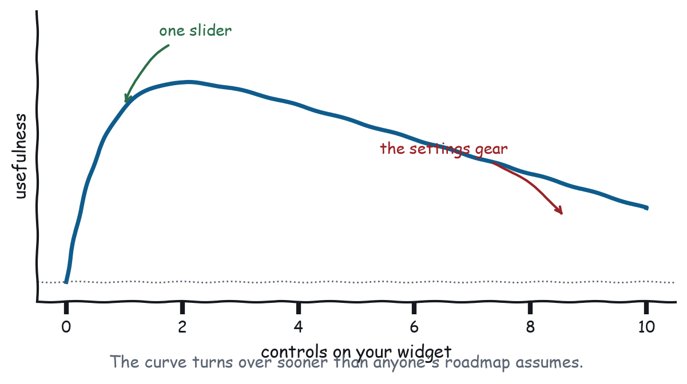
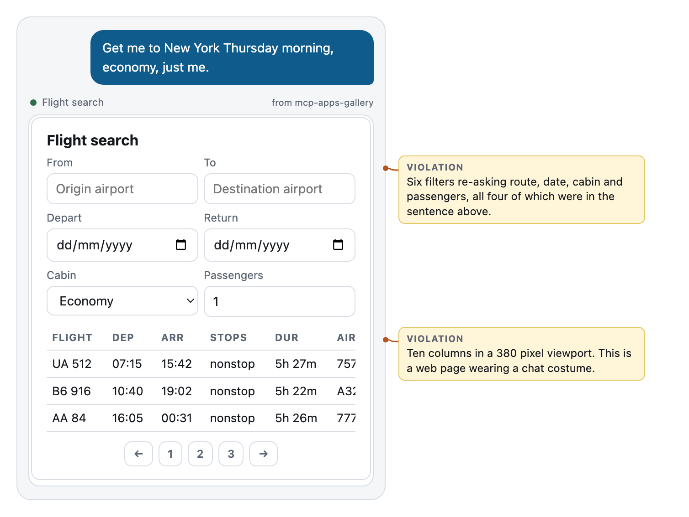
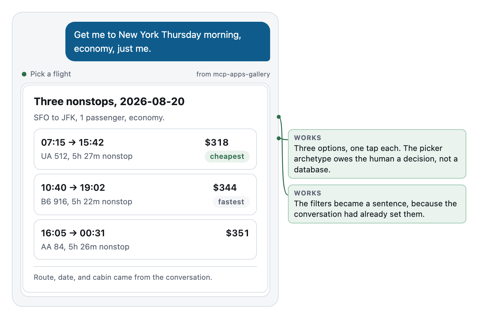

Chapter 5
Omit Needless Widgets
The six archetypes, what each owes both users, and the case for shipping zero.
Strunk and White told writers to omit needless words. Krug pointed out that half the words on any web page could go without anyone noticing, and that removing them made the remaining half easier to find.
The same arithmetic applies here, at a higher exchange rate, because your viewport is a fifth the size and your user’s attention is a tenth as long.

What “needless” means here
Krug’s version of this law was about words on a page, and the exchange rate is worth stating because it changes what you cut.
A needless word costs a reader about a fifth of a second. A needless widget costs a load, a viewport, a consent surface, a decision about whether to engage, and the space where the answer would have been. Everything is more expensive here, so the threshold moves.
But needless does not mean absent. Three distinctions that keep this law from turning into minimalism theatre:
Needless widget, not needless information. Figure 5-2 drops seven columns from the pixels and keeps every one in structuredContent. The user sees less. The system knows the same.
Needless control, not needless capability. The horizon slider in Chapter 1 survived because the user acts on it. The export button did not, and exporting is still possible: the user asks, and the model calls a tool.
Needless chrome, not needless identity. Chapter 10 requires you to say who you are. That is one line, and it is load-bearing. A logo, a nav bar, and a notification bell are not that line.
The porting instinct
The most common way to get this wrong is not to over-design. It is to port.
Somebody has a product. The product has a dashboard. MCP Apps arrive, the dashboard is already built, and putting it in an iframe takes an afternoon. Ship it.
What arrives in the conversation is a 1200 pixel application squeezed into a 380 pixel column, with a nav bar for pages the user cannot reach, a search box for content the conversation already narrowed, and a header containing a logo, a settings gear, and a notifications bell with a red dot on it.
Every one of those elements was correct in the product. The nav bar is correct when there are pages. The search box is correct when the user arrived with no context. The bell is correct when this is where you live.
None of them is correct in a paragraph.
Porting fails because it moves the artefact instead of the job. The job that your product does for this user, in this conversation, in the next thirty seconds, is a small fraction of your product, and it is a fraction with different edges.
The six archetypes
Nearly every useful MCP App is one of six things. Knowing which one you are building tells you what to keep and what to cut, and it tells you what you owe each of your two users.
The picker
The human is choosing one thing from a small set. The model needs to know what they chose.
Owes the human: a small set, differentiated at a glance, one tap to commit. Owes the model: the choice, written back, plus enough about it to act on.
Fails when: the set is not small. A picker over 400 rows is a search interface wearing a picker’s clothes, and search interfaces belong to the model, not to your widget. Let the model narrow, then pick.
The form
The human is providing information the system does not have.
Owes the human: the fewest fields that are genuinely unknown, prefilled context shown rather than asked, correction one click away. Owes the model: the same constraints in the schema that the UI enforces, and the submitted result written back.
Fails when: fields outnumber unknowns. See Chapter 4, and see the humbling case in Chapter 9 where a plain elicitation beats the whole thing.
The dashboard
The human is checking on something.
Owes the human: a verdict, a reason, and everything else behind a disclosure. Owes the model: the verdict as a sentence, because “how are things” will be asked again in text.
Fails when: there is no verdict. A dashboard that only presents numbers has delegated the synthesis back to the person who asked you to do it.
The viewer
The human needs to see a thing: a document, an image, a model, a chart.
Owes the human: the relevant part, at a useful size, with the reason it is relevant marked. Owes the model: a text rendering of what is on screen, because the model cannot see the pixels and the user will ask about them.
Fails when: it rebuilds the browser. Zoom, rotate, print, download, page navigation, and thumbnails are a viewer application. In a chat, they are somebody else’s toolbar.
The tracker
The human is watching something change.
Owes the human: current state, the time it was read, and a way to refresh. Owes the model: the same, so a question about it does not need a new render.
Fails when: it stops looking and keeps asserting. Chapter 7.
The canvas
The human is manipulating something directly, because describing it in words would be slower.
Owes the human: direct manipulation that feels immediate. Owes the model: the result of the manipulation, in structured form, at every resting point.
Fails when: it is opaque. Figure 2-1 is a canvas that fails this way.
The archetype card
One table, for taping next to the laws.
| Archetype | The human’s job | The one thing to get right | Owes the model |
|---|---|---|---|
| Picker | Choose one of a few | Differentiated at a glance, one tap | The choice, and enough about it to act |
| Form | Supply what is missing | Only the genuinely unknown fields | Same constraints in the schema |
| Dashboard | Check on something | A verdict, not a pile of numbers | The verdict as a sentence |
| Viewer | See a specific thing | The relevant part, marked | A text rendering of what is shown |
| Tracker | Watch something change | The time it was read | State plus timestamp |
| Canvas | Manipulate directly | Immediacy | The result at every resting point |
The rightmost column is the one people discover late. Every archetype owes the model something different, and in every case it is the thing the pixels are carrying that the API is not.
Knowing which one you are
Most confused widgets are two archetypes fighting.
A dashboard with a form in it: the user came to check on something and got asked a question. A viewer with a picker in it: the user came to read one clause and got a table of contents. A canvas with a dashboard around it: the user came to move things and got metrics about the things.
When you cannot tell which archetype you are building, that is the finding. Split it. Two renders, each with one job, beat one render with two, because the conversation is a perfectly good container for a sequence and your widget is a poor one.
When the right number is zero
This deserves to be said plainly, because it is the option nobody defends in planning meetings.
Sometimes the correct MCP App is no MCP App.
- A verdict is a sentence. “Yes, you can cancel with 90 days notice.” Nothing visual is being communicated.
- Under about five rows and three columns, a Markdown table in
contentis fine. It streams, it copies, it is screen-readable, it costs nothing, and the model can quote it later. - A structured question is an elicitation. The host renders it, in the host’s own style, in every host, including the ones that do not do apps.
- A confirmation is a sentence and a tool call. “I’m about to void EXP-40122. Confirm?” needs no chrome.
Every one of those options is faster than your widget, works in more places than your widget, and survives being scrolled past in a way your widget does not.
Shipping zero widgets for a given tool is not a failure to adopt the platform. It is the platform working: MCP Apps are an option, they negotiate as an extension, and a server that renders exactly where rendering helps is a well-designed server.
Teardown: one over-built picker
The task: “get me to New York Thursday morning, economy, just me.”

Six filters, all six re-asking things the sentence contained. Ten columns: flight, departure, arrival, stops, duration, aircraft, cabin, fare, bags, CO2. Pagination, for three results. In a 380 pixel column the table scrolls horizontally, which means the fare, which is the only column anybody looks at first, is off screen.
The aircraft type is interesting to about one traveller in fifty. It is on screen, at the same visual weight as the price, on every render, for everybody.

Three cards. Departure and arrival as the headline, because that is how people choose flights. Fare as the second thing. Duration and flight number underneath. Two tags, cheapest and fastest, because those are the two comparisons that drive most decisions and computing them is free.
The six filters became one line of grey text: SFO to JFK, one passenger, economy. Everything the filters would have set is stated, so the user can see that the assumptions are right, and nothing is being asked.
The other seven columns are gone from the render. They are not gone from the system: they are in structuredContent, so the model has them, and if the user asks “which one is the widebody” the answer comes back in text without another render. That is the decomposition this chapter is about. One widget became a smaller widget plus a sentence, and the information that left the pixels went somewhere it can still be used.
Composing archetypes across renders
Splitting does not mean shipping less. It means shipping the parts in sequence, which the transcript is unusually good at holding.
A travel booking is a picker, then a form, then a tracker. Built as one widget it is a wizard with three internal states, a back button you had to write, and a model that sees one tool call. Built as three renders it is three tools, three descriptions, three schemas, and a conversation that reads like what happened.
The second version has a property the first does not: the user can leave in the middle and come back by asking. “Actually, go back to the flights” works, because the picker is a tool with arguments rather than a state inside a widget nobody can address.
The cost is real. Three renders is three consent moments and more scrolling, so do not decompose a single decision into three cards for the sake of purity. Decompose when the steps are separately meaningful, and keep them together when they are not. Chapter 8 has the full decision.
The decomposition test
When a widget feels overloaded, run this in order:
- What is the one question this render answers? Write it down. If you write down two, you have two widgets.
- What is on screen that does not serve that question? Move it to
structuredContent, to a disclosure, or to the bin. - What is on screen that a sentence would serve better? Move it to
content. - What remains, and does it still beat prose? Chapter 1’s three questions, applied to the residue.
Step four is the one people skip, and it is the one that occasionally tells you to delete the widget. That is a good outcome. It is cheaper to learn it now than after the launch.
The archetype nobody admits to
There is a seventh thing people build, and it is not on the list because it is not an archetype. It is a habit.
The launcher. A widget whose job is to be a menu of your other widgets. Four buttons: Reports, Settings, History, Help. It exists because somebody could not decide which of the six archetypes the task needed, so they shipped a hallway.
Launchers fail hard here, for a reason specific to the medium. The model already is the launcher. It has your tool list, it has descriptions, and it routes based on what the user said, which is a better routing signal than four buttons. A launcher widget is a worse version of the thing the host already does, occupying the space where the answer would have been.
The tell that you are building one: the render answers no question. It offers. If a user could look at it and say “and?”, it is a hallway.
The fix is the same as everywhere else in this chapter. Work out which single question this call answers, build that, and let the model handle the routing to the other five things you were going to put on the menu.
What to remember
Six archetypes cover nearly everything: picker, form, dashboard, viewer, tracker, canvas. Each owes the human one thing and the model another. Confusion about which one you are building shows up as an overloaded widget, and the fix is to split rather than to compress. And the right widget count is sometimes zero, which is a decision you are allowed to make on purpose.
That is Part 1. Four laws, and everything after this is what it takes to honour them.
Next chapter: enough mechanism to make the rest of the arguments land, and no more.